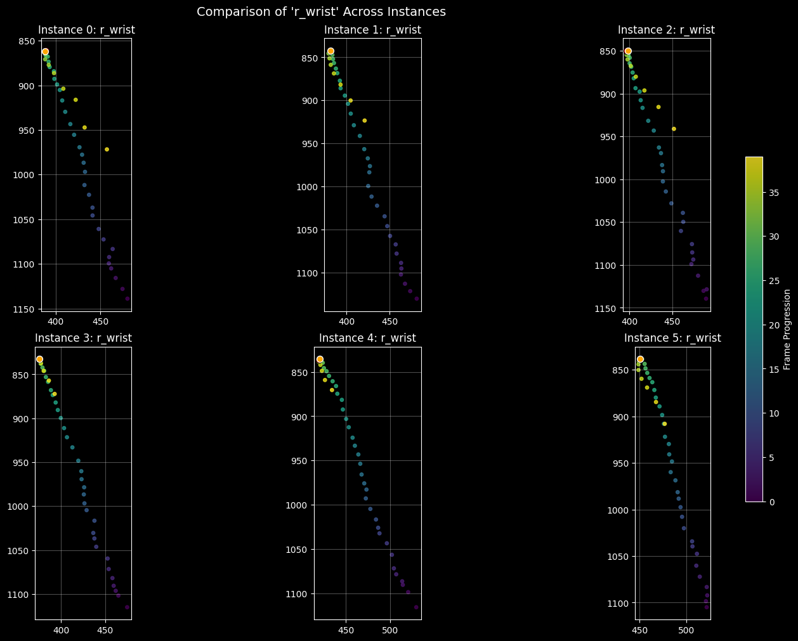

from fastai.vision.all import *
from eagle_swing.data_class import *
from eagle_swing.video_utils import *df = pd.read_csv('test_df.csv')
df.shape(185, 249)plt.style.use('dark_background')#df.columns
# weird_peak_shoulder_vel = df[df.peak_shoulder_vel > 50].clip_name.values
# weird_peak_shoulder_velbase_path = '../../../data/full_videos/ymirza'
day_path = f"{base_path}/sep14"
cleaned_df_paths = [file for file in get_files(day_path, extensions='.csv') if file.name == 'clean_lbls.csv']
df_holder = []
for df_path in cleaned_df_paths:
df_holder.append(pd.read_csv(df_path))
cleaned_df = pd.concat(df_holder).reset_index(drop=True)
#cleaned_df['swing_day'] = cleaned_df.pkl_path.map(lambda x: x.split('/')[0])
print(f"our final data frame has shape: {cleaned_df.shape}")
cleaned_df['pkl_path'] = cleaned_df.pkl_path.map(lambda x: f'{base_path}/{x}')
before_increment = 90
after_increment = 45
cleaned_df['start_idx'] = cleaned_df['first_higher_wrists_backswing_frame'] - before_increment
cleaned_df['end_idx'] = cleaned_df['first_higher_wrists_backswing_frame'] + after_incrementour final data frame has shape: (46, 6)df5 = cleaned_df[cleaned_df.score.map(lambda x: x == 5)]
df1 = cleaned_df[cleaned_df.score.map(lambda x: x == 1)]
test_df = pd.concat([df5.iloc[:3], df1.iloc[:3]]).reset_index(drop=True)#test_df = cleaned_df[cleaned_df.clip_name.map(lambda x: x in weird_peak_shoulder_vel)]
# test_df = cleaned_df[cleaned_df.video_name.map(lambda x: x == 'IMG_1093')]
# test_df# frames_list = []
# for idx, row in test_df.iterrows():
# video_path = f"{row.pkl_path[:-3]}mp4"
# frames, fps = get_frames(video_path,
# start_idx=row.start_idx,
# num_frames=row.end_idx - row.start_idx,
# )
# frames_list.append(frames)
# [x.shape for x in frames_list]# view_videos_grid(frames_list)# SwExt_list = []
# for idx, row in test_df.iterrows():
# SwExt_list.append(SwingExtractor(row))
# clip_names = [SwExt_list[x].clip_name for x in range(len(SwExt_list))]
# print(clip_names)
# SwExt_list[0].kps.kps.shape# plot_feature_comparison(
# SwExt_list,
# 'hip_angle',
# 'hip_angle_acc',
# 'hip_angle_vel',
# 'left_arm_angle',
# 'left_leg_angle',
# 'right_arm_angle',
# 'right_leg_angle',
# 'right_arm_angle_vel',
# 'right_arm_angle_acc',
# 'left_side_bend',
# 'right_side_bend',
# 'x_factor',
# 'shoulder_angle',
# 'shoulder_angle_vel',
# 'shoulder_angle_acc',
# 'right_side_bend',
# 'left_side_bend',
# # 'vertical_extension',
# # 'vertical_extension_vel',
# # 'vertical_extension_acc',
# # 'x_factor',
# # 'x_factor_vel',
# # 'x_factor_acc',
# # 'x_torque',
# #attr_name='metrics',
# instance_labels=clip_names,
# markers=[25, 38, 48, 55],
# )def plot_feature_comparison(instances, *features, attr_name='data',
instance_labels=None, figsize=None,
markers=None,
marker_kwargs=None,
legend_side='right'):
"""
Plots specified features vertically, comparing multiple class instances on each plot.
Args:
instances (list): List of 2-6 class instances.
*features (str): Variable number of feature names (keys) to extract from the attribute.
attr_name (str): The name of the attribute to index into (default: 'data').
e.g., if you access instance.metrics['velocity'], attr_name='metrics'.
instance_labels (list, optional): List of strings to label the instances in the legend.
figsize (tuple, optional): Figure size override. Defaults to auto-scaled height.
"""
num_features = len(features)
if num_features == 0:
print("No features provided to plot.")
return
# Set up the vertical subplot layout
# Dynamically scale height: 3 inches per feature is usually a good readable standard
fig_height = 3 * num_features
if figsize is None:
figsize = (12, fig_height)
fig, axes = plt.subplots(nrows=num_features, ncols=1, figsize=figsize, sharex=True)
# Ensure axes is iterable even if there's only one feature
if num_features == 1:
axes = [axes]
# Generate default labels if none provided
if instance_labels is None:
instance_labels = [f"Instance {i+1}" for i in range(len(instances))]
if marker_kwargs is None:
colors = ['red', 'blue', 'green', 'yellow']
marker_kwargs = [dict(color=colors[x], linestyle='--', linewidth=1) for x in range(len(colors))]
# Loop through each feature (subplot)
for ax, feature in zip(axes, features):
ax.set_title(f"Feature: {feature}", fontsize=11, fontweight='bold')
ax.set_ylabel("Value")
2
# Loop through each class instance (line in the plot)
for i, instance in enumerate(instances):
try:
# 1. Access the attribute (e.g., instance.data)
#container = instance#getattr(instance, attr_name)
# 2. Index into the attribute (e.g., instance.data['velocity'])
data_array = getattr(instance, feature)
#print(data_array.shape){
# Plotting logic
ax.plot(data_array, label=instance_labels[i], alpha=0.8, linewidth=1.5)
except KeyError:
print(f"Warning: Feature '{feature}' not found in instance {i+1}.")
#except AttributeError:
# print(f"Error: Instance {i+1} does not have attribute '{attr_name}'.")
# add vertical marker on this subplot
if markers:
if type(markers) == list:
[ax.axvline(marker, **marker_kwargs[idx]) for idx, marker in enumerate(markers)]
else:
ax.axvline(markers, **marker_kwargs)
ax.grid(True, alpha=0.3)
ax.legend(loc=f'upper {legend_side}', fontsize='small', framealpha=0.9)
# Label the bottom x-axis only
axes[-1].set_xlabel("Index / Frame")
plt.tight_layout()
plt.show()before_increment = 20
after_increment = 20
cleaned_df['start_idx'] = cleaned_df['first_higher_wrists_backswing_frame'] - before_increment
cleaned_df['end_idx'] = cleaned_df['first_higher_wrists_backswing_frame'] + after_increment
df5 = cleaned_df[cleaned_df.score.map(lambda x: x == 5)]
df1 = cleaned_df[cleaned_df.score.map(lambda x: x == 1)]
test_df = pd.concat([df5.iloc[:3], df1.iloc[:3]]).reset_index(drop=True)
SwExt_list = []
for idx, row in test_df.iterrows():
SwExt_list.append(SwingExtractor(row))
clip_names = [SwExt_list[x].clip_name for x in range(len(SwExt_list))]
print(clip_names)['IMG_1086_swing_3_score_5', 'IMG_1086_swing_4_score_5', 'IMG_1087_swing_1_score_5', 'IMG_1093_swing_0_score_1', 'IMG_1093_swing_2_score_1', 'IMG_1093_swing_4_score_1']frames_list = []
for idx, row in test_df.iterrows():
video_path = f"{row.pkl_path[:-3]}mp4"
frames, fps = get_frames(video_path,
start_idx=row.start_idx,
num_frames=row.end_idx - row.start_idx,
)
frames_list.append(frames)
view_videos_grid(frames_list)100%|███████████████████████████████████████████████████████████████████████| 40/40 [00:00<00:00, 447.84it/s]
100%|███████████████████████████████████████████████████████████████████████| 40/40 [00:00<00:00, 455.23it/s]
100%|███████████████████████████████████████████████████████████████████████| 40/40 [00:00<00:00, 506.70it/s]
100%|███████████████████████████████████████████████████████████████████████| 40/40 [00:00<00:00, 481.11it/s]
100%|███████████████████████████████████████████████████████████████████████| 40/40 [00:00<00:00, 481.61it/s]
100%|███████████████████████████████████████████████████████████████████████| 40/40 [00:00<00:00, 473.92it/s]complex_backswing_top_frames = [get_top_idx(SwExt_list[x].kps.r_wrist,
y_axis_only=True,
thresh_value=0.01) for x in range(len(SwExt_list))]
complex_backswing_top_frames[30, 31, 31, 33, 33, 32]backswing_top_idxs = [np.argmin(SwExt_list[x].kps.r_wrist[:, :2].sum(axis=1)) for x in range(len(SwExt_list))]
backswing_top_idxs[31, 31, 32, 33, 34, 32]highlight_frames = [np.argmax(SwExt_list[x].kps.r_wrist[:, :2].sum(axis=1)) for x in range(len(SwExt_list))]
plot_feature_across_instances(SwExt_list,
feature_name='r_wrist',
highlight_frames=backswing_top_idxs,
highlight_frames_orange=complex_backswing_top_frames)
Lets find the contact frame
before_increment = -20
after_increment = 40
cleaned_df['start_idx'] = cleaned_df['first_higher_wrists_backswing_frame'] - before_increment
cleaned_df['end_idx'] = cleaned_df['first_higher_wrists_backswing_frame'] + after_increment
df5 = cleaned_df[cleaned_df.score.map(lambda x: x == 5)]
df1 = cleaned_df[cleaned_df.score.map(lambda x: x == 1)]
test_df = pd.concat([df5.iloc[:3], df1.iloc[:3]]).reset_index(drop=True)
SwExt_list = []
for idx, row in test_df.iterrows():
SwExt_list.append(SwingExtractor(row))
clip_names = [SwExt_list[x].clip_name for x in range(len(SwExt_list))]
print(clip_names)['IMG_1086_swing_3_score_5', 'IMG_1086_swing_4_score_5', 'IMG_1087_swing_1_score_5', 'IMG_1093_swing_0_score_1', 'IMG_1093_swing_2_score_1', 'IMG_1093_swing_4_score_1']frames_list = []
for idx, row in test_df.iterrows():
video_path = f"{row.pkl_path[:-3]}mp4"
frames, fps = get_frames(video_path,
start_idx=row.start_idx,
num_frames=row.end_idx - row.start_idx,
)
frames_list.append(frames)
view_videos_grid(frames_list)100%|███████████████████████████████████████████████████████████████████████| 20/20 [00:00<00:00, 381.53it/s]
100%|███████████████████████████████████████████████████████████████████████| 20/20 [00:00<00:00, 376.70it/s]
100%|███████████████████████████████████████████████████████████████████████| 20/20 [00:00<00:00, 439.48it/s]
100%|███████████████████████████████████████████████████████████████████████| 20/20 [00:00<00:00, 416.40it/s]
100%|███████████████████████████████████████████████████████████████████████| 20/20 [00:00<00:00, 419.38it/s]
100%|███████████████████████████████████████████████████████████████████████| 20/20 [00:00<00:00, 415.38it/s]def get_top_idx(kps, y_axis_only=True,
thresh_value=0.001):
pos = kps[:, :2] #.r_wrist[:, :2] # (T, 2)
pos_s = savgol_filter(pos,
window_length=9,
polyorder=2,
axis=0)
v = np.diff(pos_s, axis=0) # (T-1, 2) frame-to-frame velocity
speed = np.linalg.norm(v, axis=1)
thresh = thresh_value * speed.max()
if y_axis_only:
vy = v[:, 1] # vertical component
sign = np.sign(vy)
cross = np.where((sign[:-1] < 0) & (sign[1:] > 0) &
(speed[:-1] > thresh) & (speed[1:] > thresh))[0]
change_frame = cross[0] + 1 if len(cross) else None
else:
# 1. Compute dot product between consecutive velocity vectors
# Shapes: (T-2, 2) * (T-2, 2) -> (T-2,)
dot = np.sum(v[:-1] * v[1:], axis=1)
# 2. Check speed for the SAME vectors used in the dot product
# speed[:-1] corresponds to v[:-1] (velocity entering the turn)
# speed[1:] corresponds to v[1:] (velocity exiting the turn)
candidates = np.where((dot < 0) &
(speed[:-1] > thresh) &
(speed[1:] > thresh))[0]
# 3. Adjust index
# candidates[0] is the index in the 'dot' array.
# dot[i] compares frame i and i+1 (in velocity space), which is frame i+1 and i+2 in position space.
# We usually want the frame *at* the vertex (the point between the vectors).
# If v[0] is pos[1]-pos[0], the "turn" happens at pos[1].
# So index + 1 is generally correct for the "vertex" frame.
change_frame = candidates[0] + 1 if len(candidates) > 0 else None
return change_frame [np.argmax(SwExt_list[x].kps.r_wrist[:, :2].sum(axis=1)) for x in range(len(SwExt_list))][6, 7, 7, 9, 9, 8][get_top_idx(SwExt_list[x].kps.r_wrist,
y_axis_only=True,
thresh_value=0.01) for x in range(len(SwExt_list))][8, None, 8, 11, 11, 11]contact_idxs = [8,9,8,10,11,10]
highlight_frames = [np.argmax(SwExt_list[x].kps.r_wrist[:, :2].sum(axis=1)) for x in range(len(SwExt_list))]
plot_feature_across_instances(SwExt_list,
feature_name='r_wrist',
highlight_frames=highlight_frames,
highlight_frames_orange=contact_idxs)
Now lets look at just top of backswing to contact
complex_backswing_top_frames, highlight_frames([30, 31, 31, 33, 33, 32], [6, 7, 7, 9, 9, 8])# 20 frames before the first wrist over shoulder
top_frame = np.array(complex_backswing_top_frames) - 20
#top_frame = np.array(backswing_top_idxs) - 20
#bottom_frame = np.array(contact_idxs) + 20
bottom_frame = np.array(highlight_frames) + 20
bottom_frame - top_framearray([16, 16, 16, 16, 16, 16])top_frame, bottom_frame(array([10, 11, 11, 13, 13, 12]), array([26, 27, 27, 29, 29, 28]))frames_list = []
for idx, row in test_df.iterrows():
video_path = f"{row.pkl_path[:-3]}mp4"
frames, fps = get_frames(video_path,
start_idx=row.start_idx + top_frame[idx] - 20,
num_frames=top_frame[idx] + bottom_frame[idx] + 5 - 20,
)
frames_list.append(frames)
view_videos_grid(frames_list)100%|███████████████████████████████████████████████████████████████████████| 21/21 [00:00<00:00, 459.07it/s]
100%|███████████████████████████████████████████████████████████████████████| 23/23 [00:00<00:00, 432.96it/s]
100%|███████████████████████████████████████████████████████████████████████| 23/23 [00:00<00:00, 502.33it/s]
100%|███████████████████████████████████████████████████████████████████████| 27/27 [00:00<00:00, 440.96it/s]
100%|███████████████████████████████████████████████████████████████████████| 27/27 [00:00<00:00, 470.88it/s]
100%|███████████████████████████████████████████████████████████████████████| 25/25 [00:00<00:00, 465.99it/s]Lets find the start of the swings frame
before_increment = 90
after_increment = 0
cleaned_df['start_idx'] = cleaned_df['first_higher_wrists_backswing_frame'] - before_increment
cleaned_df['end_idx'] = cleaned_df['first_higher_wrists_backswing_frame'] + after_increment
df5 = cleaned_df[cleaned_df.score.map(lambda x: x == 5)]
df1 = cleaned_df[cleaned_df.score.map(lambda x: x == 1)]
test_df = pd.concat([df5.iloc[:3], df1.iloc[:3]]).reset_index(drop=True)
SwExt_list = []
for idx, row in test_df.iterrows():
SwExt_list.append(SwingExtractor(row))
clip_names = [SwExt_list[x].clip_name for x in range(len(SwExt_list))]
frames_list = []
for idx, row in test_df.iterrows():
video_path = f"{row.pkl_path[:-3]}mp4"
frames, fps = get_frames(video_path,
start_idx=row.start_idx,
num_frames=row.end_idx - row.start_idx,
)
frames_list.append(frames)
view_videos_grid(frames_list)
print(clip_names)100%|███████████████████████████████████████████████████████████████████████| 90/90 [00:00<00:00, 513.14it/s]
100%|███████████████████████████████████████████████████████████████████████| 90/90 [00:00<00:00, 520.36it/s]
100%|███████████████████████████████████████████████████████████████████████| 90/90 [00:00<00:00, 497.92it/s]
100%|███████████████████████████████████████████████████████████████████████| 90/90 [00:00<00:00, 543.11it/s]
100%|███████████████████████████████████████████████████████████████████████| 90/90 [00:00<00:00, 519.48it/s]
100%|███████████████████████████████████████████████████████████████████████| 90/90 [00:00<00:00, 551.70it/s]['IMG_1086_swing_3_score_5', 'IMG_1086_swing_4_score_5', 'IMG_1087_swing_1_score_5', 'IMG_1093_swing_0_score_1', 'IMG_1093_swing_2_score_1', 'IMG_1093_swing_4_score_1']start_frame_idxs = [15, 16, 20, 5, 15, 14] #SwExt_list[0].kps.r_wrist[:, :2].flatten()# #from dtw import dtw
# swing_a = SwExt_list[0].kps.r_wrist[:, 1].flatten()
# swing_b = SwExt_list[1].kps.r_wrist[:, 1].flatten()
# alignment = dtw(swing_a, swing_b, keep_internals=True)
# print(f"DTW Distance: {alignment.distance}")
# alignment.plot(type="threeway")ref_data = SwExt_list[-2].kps.r_wrist[:, :2]
KNOWN_START_FRAME = 19
query_data = SwExt_list[0].kps.r_wrist[:, :2]
# 3. Get the prediction
predicted_start = find_event_in_new_swing(ref_data, query_data, KNOWN_START_FRAME)
print(f"Reference Backswing Start: Frame {KNOWN_START_FRAME}")
print(f"Predicted Query Backswing Start: Frame {predicted_start}")--------------------------------------------------------------------------- NameError Traceback (most recent call last) Cell In[40], line 8 4 query_data = SwExt_list[0].kps.r_wrist[:, :2] 7 # 3. Get the prediction ----> 8 predicted_start = find_event_in_new_swing(ref_data, query_data, KNOWN_START_FRAME) 10 print(f"Reference Backswing Start: Frame {KNOWN_START_FRAME}") 11 print(f"Predicted Query Backswing Start: Frame {predicted_start}") Cell In[39], line 26, in find_event_in_new_swing(ref_swing, query_swing, ref_event_frame) 21 query_norm = (query_swing - np.mean(query_swing, axis=0)) / (np.std(query_swing, axis=0) + 1e-6) 23 # 2. Compute DTW Alignment 24 # The library automatically handles multidimensional arrays (frames x features) 25 # keep_internals=True is required to access the warping path ---> 26 alignment = dtw(query_norm, ref_norm, keep_internals=True) 28 # 3. Extract the Warping Path 29 # index1 corresponds to query (first arg), index2 corresponds to reference (second arg) 30 query_indices = alignment.index1 NameError: name 'dtw' is not defined
def find_event_in_new_swing(ref_swing, query_swing, ref_event_frame):
"""
Uses DTW to transfer a known event timestamp from a reference swing
to a new query swing.
Args:
ref_swing (np.array): Shape (n_frames, 4). Reference swing keypoints.
[wrist_x, wrist_y, club_x, club_y]
query_swing (np.array): Shape (m_frames, 4). New swing to analyze.
ref_event_frame (int): The frame index in ref_swing where the event occurs
(e.g., start of backswing).
Returns:
int: The predicted frame index in query_swing.
"""
# 1. Normalization (Crucial for DTW)
# We subtract mean and divide by std so that position offsets (standing
# slightly closer/further) don't ruin the shape matching.
ref_norm = (ref_swing - np.mean(ref_swing, axis=0)) / (np.std(ref_swing, axis=0) + 1e-6)
query_norm = (query_swing - np.mean(query_swing, axis=0)) / (np.std(query_swing, axis=0) + 1e-6)
# 2. Compute DTW Alignment
# The library automatically handles multidimensional arrays (frames x features)
# keep_internals=True is required to access the warping path
alignment = dtw(query_norm, ref_norm, keep_internals=True)
# 3. Extract the Warping Path
# index1 corresponds to query (first arg), index2 corresponds to reference (second arg)
query_indices = alignment.index1
ref_indices = alignment.index2
# 4. Find the Match
# We look for all points in the path where the reference index matches our event.
matches = np.where(ref_indices == ref_event_frame)[0]
if len(matches) == 0:
# Fallback: Find the closest point in the path if exact index was skipped
# (Can happen with certain step patterns, though rare)
closest_idx = np.abs(ref_indices - ref_event_frame).argmin()
match_idx = closest_idx
else:
# If multiple query frames map to the single reference frame (vertical path segment),
# the event "starts" at the first one.
match_idx = matches[0]
predicted_frame = query_indices[match_idx]
return predicted_frameswing_a = SwExt_list[0].kps.r_wrist[:, 1].flatten()
swing_b = SwExt_list[2].kps.r_wrist[:, 1].flatten()
alignment = dtw(swing_a, swing_b, keep_internals=True)
print(f"DTW Distance: {alignment.distance}")
alignment.plot(type="threeway")--------------------------------------------------------------------------- NameError Traceback (most recent call last) Cell In[41], line 3 1 swing_a = SwExt_list[0].kps.r_wrist[:, 1].flatten() 2 swing_b = SwExt_list[2].kps.r_wrist[:, 1].flatten() ----> 3 alignment = dtw(swing_a, swing_b, keep_internals=True) 4 print(f"DTW Distance: {alignment.distance}") 5 alignment.plot(type="threeway") NameError: name 'dtw' is not defined
# swing_a = SwExt_list[0].kps.r_wrist[:, 1].flatten()
# swing_b = SwExt_list[3].kps.r_wrist[:, 1].flatten()
# alignment = dtw(swing_a, swing_b, keep_internals=True)
# print(f"DTW Distance: {alignment.distance}")
# alignment.plot(type="threeway")# swing_a = SwExt_list[0].kps.r_wrist[:, 1].flatten()
# swing_b = SwExt_list[4].kps.r_wrist[:, 1].flatten()
# alignment = dtw(swing_a, swing_b, keep_internals=True)
# print(f"DTW Distance: {alignment.distance}")
# alignment.plot(type="threeway")# swing_a = SwExt_list[0].kps.r_wrist[:, 1].flatten()
# swing_b = SwExt_list[5].kps.r_wrist[:, 1].flatten()
# alignment = dtw(swing_a, swing_b, keep_internals=True)
# print(f"DTW Distance: {alignment.distance}")
# alignment.plot(type="threeway")#highlight_frames = [np.argmax(SwExt_list[x].kps.r_wrist[:, :2].sum(axis=1)) for x in range(len(SwExt_list))]
plot_feature_across_instances(SwExt_list,
feature_name='r_wrist',
highlight_frames=start_frame_idxs,#[10]*6,
highlight_frames_orange=[80]*6,
# highlight_frames=highlight_frames,
#highlight_frames_orange=contact_idxs
#smooth=False,
#smooth_window=11
)
def plot_feature_across_instances(data_instances,
feature_name,
plot_names=None,
figsize=(15, 10),
highlight_frames=None, # Original Red Highlight
highlight_frames_orange=None,
smooth=False,
smooth_window=7,
smooth_poly_order=3): # New Orange Highlight
"""
Plots the trajectory of a SINGLE feature across MULTIPLE data instances
in a 3-column grid with optional Red and Orange highlight points.
Args:
data_instances (list): A list of class instances containing the data.
feature_name (str): The specific attribute name to plot.
plot_names (list of str, optional): Titles for each subplot.
figsize (tuple): Dimensions of the figure.
highlight_frames (list of int, optional): List of frame indices to highlight in RED.
highlight_frames_orange (list of int, optional): List of frame indices to highlight in ORANGE.
"""
# 1. Setup Grid
num_plots = len(data_instances)
cols = 3
rows = int(np.ceil(num_plots / cols))
fig, axes = plt.subplots(rows, cols, figsize=figsize, constrained_layout=True)
if num_plots == 1:
axes_flat = [axes]
else:
axes_flat = axes.flatten()
first_valid_plot = None
# 2. Loop through instances
for i, instance in enumerate(data_instances):
if i >= len(axes_flat): break
ax = axes_flat[i]
try:
data = getattr(instance.kps, feature_name)
except AttributeError:
ax.text(0.5, 0.5, f"Feature '{feature_name}'\nnot found",
ha='center', va='center', transform=ax.transAxes)
continue
if data.ndim == 3 and data.shape[1] == 1:
data = data.squeeze(1)
if data.ndim != 2 or data.shape[1] < 2:
ax.text(0.5, 0.5, f"Invalid Shape\n{data.shape}",
ha='center', va='center')
continue
if smooth:
x = savgol_filter(data[:, 0], smooth_window, smooth_poly_order)
y = savgol_filter(data[:, 1], smooth_window, smooth_poly_order)
x = data[:, 0]
y = data[:, 1]
# Plot trajectory
time_colors = np.arange(len(x))
sc = ax.scatter(x, y, c=time_colors, cmap='viridis', s=15, alpha=0.8)
# --- Red Highlight (Original) ---
if highlight_frames and i < len(highlight_frames):
h_frame = highlight_frames[i]
if h_frame is not None and 0 <= h_frame < len(x):
ax.scatter(x[h_frame], y[h_frame], color='red', alpha=0.8, s=60, zorder=6, edgecolors='black')
# --- Orange Highlight (New) ---
if highlight_frames_orange and i < len(highlight_frames_orange):
h_frame_orange = highlight_frames_orange[i]
if h_frame_orange is not None and 0 <= h_frame_orange < len(x):
ax.scatter(x[h_frame_orange], y[h_frame_orange], color='orange', alpha=0.6,
s=50, zorder=6, edgecolors='white')
# Title Logic
if plot_names and i < len(plot_names):
ax.set_title(plot_names[i])
else:
ax.set_title(f"Instance {i}: {feature_name}")
ax.invert_yaxis()
ax.set_aspect('equal')
ax.grid(True, alpha=0.3)
if first_valid_plot is None:
first_valid_plot = sc
# 3. Hide unused subplots
for j in range(i + 1, len(axes_flat)):
axes_flat[j].axis('off')
# 4. Add Colorbar
if first_valid_plot:
cbar = fig.colorbar(first_valid_plot, ax=axes, orientation='vertical', fraction=0.02, pad=0.04)
cbar.set_label('Frame Progression')
plt.suptitle(f"Comparison of '{feature_name}' Across Instances", fontsize=14)
plt.show()print(SwExt_list[0].clip_name)
plot_feature_trajectories(SwExt_list[0],
highlight_frame=15)
# print(SwExt_list[0].clip_name)
# plot_feature_trajectories(SwExt_list[1],
# highlight_frame=7)def plot_feature_trajectories(data_instance,
feature_names=None,
figsize=(15, 6),
highlight_frame=None):
"""
Plots trajectories for specific attributes retrieved from a class instance.
Args:
data_instance: The class instance containing the data as attributes.
feature_names (list of str): List of attribute names (e.g., ['r_wrist', 'hip_center']).
Each attribute should return a numpy array of shape (Frames, 2).
figsize (tuple): Dimensions of the entire figure.
"""
if feature_names is None:
feature_names = ['r_sh', 'l_sh',
'r_elbow', 'l_elbow',
'r_wrist', 'l_wrist',
'r_hip', 'l_hip',
'r_knee', 'l_knee',
#'r_ankle', 'l_ankle'
]
# 1. Setup Grid
num_plots = len(feature_names)
cols = 5
rows = int(np.ceil(num_plots / cols))
fig, axes = plt.subplots(rows, cols, figsize=figsize, constrained_layout=True)
axes_flat = axes.flatten()
# 2. Loop through feature names
# We define the color mapper inside the loop or based on the first valid item
# to ensure it matches the frame count of the data.
first_valid_plot = None
for i, name in enumerate(feature_names):
if i >= len(axes_flat): break
ax = axes_flat[i]
# --- KEY CHANGE: Dynamic Retrieval ---
try:
data = getattr(data_instance.kps, name)
except AttributeError:
ax.text(0.5, 0.5, f"Attribute '{name}'\not found",
ha='center', va='center', transform=ax.transAxes)
continue
x = data[:, 0]
y = data[:, 1]
# Create Time Colors (based on length of this specific array)
time_colors = np.arange(len(x))
# Plot
sc = ax.scatter(x, y, c=time_colors, cmap='viridis', s=15, alpha=0.8)
# Highlight the specified frame with a red dot
if highlight_frame is not None and 0 <= highlight_frame < len(x):
ax.scatter(x[highlight_frame], y[highlight_frame], color='red', s=50, zorder=5, edgecolors='black')
# --- KEY CHANGE: Labeling ---
ax.set_title(name.replace('_', ' ').title()) # e.g., "r_wrist" -> "R Wrist"
# Standard CV Formatting
ax.invert_yaxis()
ax.set_aspect('equal')
ax.grid(True, alpha=0.3)
if first_valid_plot is None:
first_valid_plot = sc
# 3. Hide unused subplots
for j in range(i + 1, len(axes_flat)):
axes_flat[j].axis('off')
# 4. Add Colorbar (referenced to the first valid plot found)
if first_valid_plot:
cbar = fig.colorbar(first_valid_plot, ax=axes, orientation='vertical', fraction=0.02, pad=0.04)
cbar.set_label('Frame Progression')
plt.show()